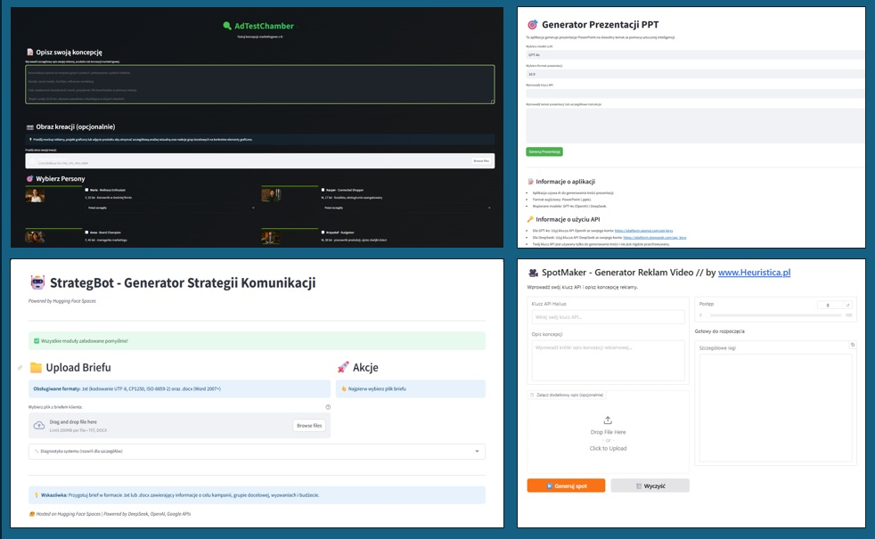

Tu znajdziesz konstruowane przeze mnie, autorskie narzędzia AI wspierające procesy biznesu i marketingu.

(uwaga: prototypy narzędzi działają w środowisku Hugging Face Spaces. Jeśli któreś z nich jest chwilowo nieaktywne - np. przestrzeń została "uśpiona" - napisz do mnie — uruchomię ją ponownie)
🎬 StoryLens
– narzędzie wykorzystujące sztuczną inteligencję do diagnostyki struktury narracyjnej reklam wideo. Aplikacja analizuje Twój spot klatka po klatce, klasyfikując każdy segment do 21 ról funkcjonalnych (Hook, Problem Setup, Social Proof, CTA...) i wykrywając wzorzec story arc. Otrzymujesz natychmiastową diagnozę z rekomendacjami opartymi na badaniach Meta (50 000 reklam) – które elementy brakują, jaki arc sprawdzi się lepiej dla Twojego celu i ile procent konwersji możesz zyskać, zmieniając strukturę spotu.
🔍 AdTestChamber
– narzędzie wykorzystujące sztuczną inteligencję do testowania koncepcji reklamowych na personach polskich konsumentów. Aplikacja analizuje opisaną przez Ciebie reklamę lub produkt przez pryzmat 8 różnych person konsumenckich
(od 17-letniego licealisty po 50-letniego inżyniera), przewidując ich autentyczne reakcje w pierwszej osobie –
„co myślę, co czuję, co zrobię”.
Otrzymujesz natychmiastową prognozę skuteczności swojej kampanii marketingowej z możliwością eksportu profesjonalnych raportów, bez konieczności przeprowadzania kosztownych badań rynkowych.
🎙️ QualiInsightLab
– zaawansowane narzędzie AI do automatycznej transkrypcji i analizy wywiadów fokusowych (FGI) oraz indywidualnych (IDI). Aplikacja wykorzystuje technologie Whisper AI i GPT-4o-mini do przekształcania nagrań audio/video w profesjonalne raporty badawcze. System automatycznie rozpoznaje typ wywiadu, ekstraktuje kluczowe insights, analizuje zachowania konsumenckie i generuje szczegółowe wnioski z rekomendacjami biznesowymi.
Otrzymujesz kompletny raport badawczy w ciągu kilkunastu minut z możliwością eksportu transkrypcji i analiz, eliminując potrzebę żmudnego przepisywania i analizowania wywiadów. Idealne dla badaczy rynku, agencji badawczych, UX researchers i zespołów R&D.
🎥 SpotMaker – Generator Reklam Video
– narzędzie wykorzystujące AI do tworzenia koncepcji i generowania gotowych wideo reklamowych na podstawie wprowadzonego opisu koncepcji.
Wystarczy wkleić klucz API Hailuo i opisać swoją ideę reklamową. Aplikacja działa w czterech etapach. Najpierw tworzy szczegółowy scenariusz z pięcioma kluczowymi ujęciami na podstawie Twojego opisu. Następnie generator text-to-speech produkuje profesjonalny głos lektora, a każde ujęcie jest zamieniane na krótki klip filmowy. Na końcu wszystko łączy się w finalny spot dopasowany do długości audio.
W rezultacie otrzymujesz gotowy film reklamowy w formacie MP4.
🤖 TenderBot – automatyczny system AI do oceny ofert przetargowych
wykorzystujący model DeepSeek. Aplikacja konwertuje dokumenty w formatach PDF, DOCX i PPTX na tekst, po czym analizuje kryteria oceny zawarte w briefie lub specyfikacji istotnych warunków zamówienia.
System działa w etapach: wgranie dokumentów, ekstrakcja kryteriów, szczegółowa analiza każdej oferty względem zidentyfikowanych kryteriów i generowanie raportów. Wynikiem jest tabela Excel z ocenami i uzasadnieniami oraz szczegółowy raport Word zawierający analizę porównawczą i rekomendacje.
📊 Multi-Format to TXT Converter
– proste i szybkie narzędzie do konwersji plików biurowych (Excel, PowerPoint, Word, PDF) na czysty tekst.
Wystarczy przeciągnąć plik lub kliknąć, by go załadować, a następnie nacisnąć „Convert to TXT”.
Obsługiwane są najpopularniejsze formaty: `.xlsx`, `.xls`, `.pptx`, `.ppt`, `.pdf`, `.docx`, `.doc`.
Gotowy tekst możesz skopiować lub pobrać jako plik `.txt – idealne do dalszej analizy, podsumowań lub pracy z AI.
🔬 A/B Prompt Tester
– narzędzie do precyzyjnego testowania i optymalizacji promptów dla modeli językowych (LLM). Pozwala porównać dwie wersje promptu (A vs B), generując dla każdej serię odpowiedzi. Aplikacja umożliwia systematyczną ocenę jakości odpowiedzi w skali 1-5, automatycznie oblicza statystyki (średnia, min, max) i wskazuje zwycięzcę. Otrzymujesz gotowe, obiektywne dane do optymalizacji skuteczności swoich promptów, z możliwością eksportu szczegółowych raportów – bez skomplikowanych arkuszy kalkulacyjnych.
🔬 Agent Analityczny
– narzędzie wykorzystujące sztuczną inteligencję do automatycznej analizy plików CSV. Aplikacja interpretuje Twoje pytania w języku naturalnym i generuje gotowy kod Python, tworząc profesjonalne wykresy oraz szczegółowe interpretacje danych. Otrzymujesz kompleksową analizę danych – od podstawowych statystyk przez zaawansowane wizualizacje po gotowe wnioski – bez konieczności posiadania zaawansowanych umiejętności programistycznych.
🎯 Strategic Sandbox
– interaktywne środowisko do modelowania strategii, które łączy myślenie systemowe, kreatywne i analityczne. Aplikacja pozwala symulować różne scenariusze decyzji, analizować ich wpływ i ryzyko oraz wizualizować zależności między insightami, hipotezami, ruchami strategicznymi i metrykami. Jest to "żyjący" model strategii, który można testować, modyfikować i audytować z pomocą AI. System oblicza Impact–Fit–Risk–Cost, generuje ranking działań i umożliwia automatyczną ocenę spójności strategii przez moduł AI Evaluator (GPT-4).
🎯 Generator Prezentacji PPT
– narzędzie, które umożliwia automatyczne tworzenie prezentacji PowerPoint na dowolny temat za pomocą AI.
Wystarczy wpisać temat lub szczegółowe instrukcje, wybrać model AI i format prezentacji, a aplikacja wygeneruje gotowy plik `.pptx`.
Obsługiwane są modele GPT‑4o (OpenAI) i DeepSeek.
Twoje dane są bezpieczne – klucz API wykorzystywany jest wyłącznie do wygenerowania prezentacji i nie jest nigdzie przechowywany.